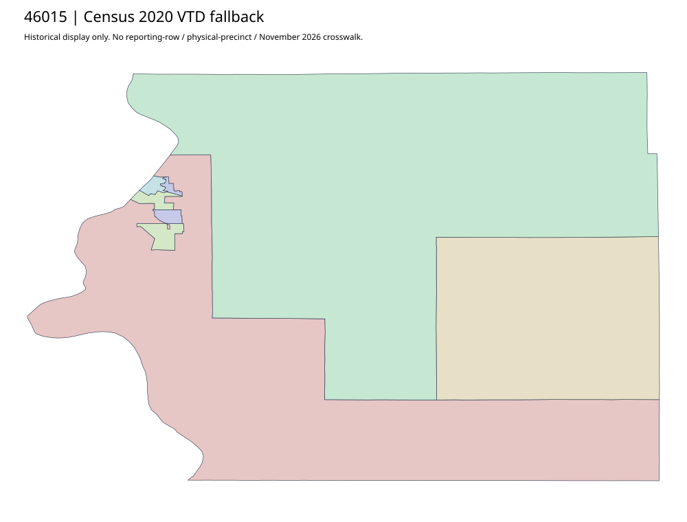

304 ordered indexBrule | 46015
Official election-information parent links an acquired complete District Map PDF. It is retained as a district-map supplement, not automatically a precinct map. Current physical precinct geometry and workbook-to-map allocation remain unavailable; complete Census2020 fallback is primary acquired boundary alternative.
2 priority / 4 full historical observations. Parent is a summary ancestor, not additive to leaves. No physical feature matches or current reporting crosswalk approved.
Acquired shared-parent assets
No complete county precinct-map original acquired from this bounded chain. Use qualified fallback; roster/landing/error bodies are retained as evidence.
Administrative/district supplement (not a precinct polygon match): map-46015-04a54bfd884a
Census2020 fallback
6 native historical VTD features. Entire785-feature ZIP original retained once, all66 counties. Yankton has one countywide VTD. No current/reporting allocation. complete original gzip

Full binary/attribute/geometry QA
Observed authority/acquisition routes
Complete SOS authority fields including original blank/masked values: parent inventory. No contacts were sent.
Ordered full children
- Precinct-01 | 1301 source votes | priority
- Precinct-02 | 547 source votes | priority
- Precinct-03 | 418 source votes | remainder
- Precinct-04 | 157 source votes | remainder